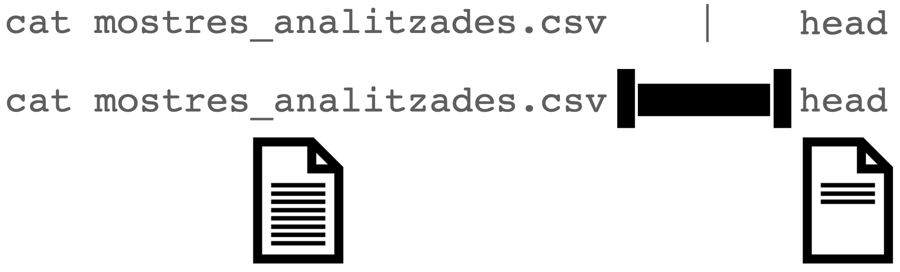
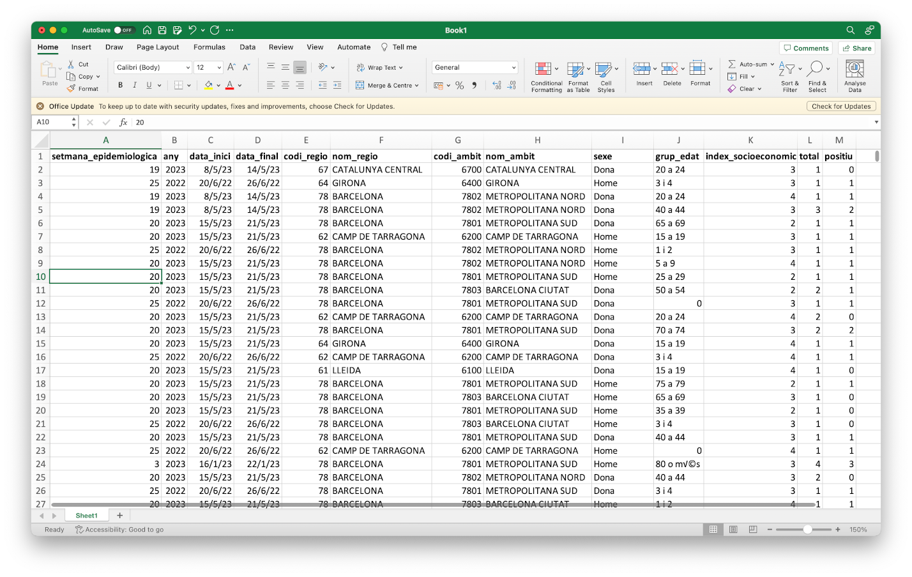

The learning objectives for this practical are:
We will download again some COVID19 data. Please follow the next two steps:
practical2 and copy in it the CSV files contained in the previous two ZIP files that you have downloaded, as you analogously did in practical 1.If you have not done so yet, please download an install a text editor application in your computer, following the setup instructions. Once the text editor application is installed, run it as follows:
If you have installed a classical text editor, open the editor in a new terminal window. Classical editors are tipically called from the Unix shell and it’s handy to given them the name of the file you want to edit right way as you called them as a first argument. If you do that, give them the filename practical2.sh.
If you have installed a modern text editor, open it by starting the application from the graphical user interface of your computer.
Once the text editor application is running, write the following two lines on a new fresh empty text file:
## Script for practical 2
Save these contents into a file called practical2.sh located at the directory practical2 that you created before. During the rest of this practical, write all the Unix commands that you type in the terminal also in the text file. Please don’t type them twice, first type them in the terminal window and once they work, then select the command-line using the mouse and finally copy and paste it into the text editor. Each time you copy a new line, save the file again. To keep a better record of what you are doing, add above each shell line a shell comment line, which always starts with one or more hash characters (#), for example:
## list the files
lsOnce you have some Unix commands in your script file, and you have save it to disk, you may execute that script from the Unix shell as follows (assuming you saved the script as practical2.sh):
$ sh practical2.shTip: when writing shell scripts you will likely introduce syntax errors, which sometimes may be difficult to identify. To help you in identifying those errors you may use the website https://www.shellcheck.net. To use it you should paste into the main text box the following line, known as shebang:
#!/bin/shand afterwords paste the line, or lines, for which you want to check the syntax of your shell script. The website will parse your script and tell you that either issues were not detected or what syntax errors have been encountered.
In the previous practical we have seen how to redirect the terminal output to a file. In this section we are going to see a similar concept, where instead of redirecting the terminal output created by a Unix command to a file, we will redirect that terminal output as input into another Unix command by using what is known as a Unix pipeline, or Unix pipe for short. The concept of Unix pipes was created by Douglas McIlroy, which is based on his widely adopted view of the Unix philosophy:
Write programs that do one thing and do it well. Write programs to work together. Write programs to handle text streams, because that is a universal interface.
To use the Unix pipe we should place the vertical bar (|), available in Spanish keyboards by pressing AltGr+1, between two Unix commands. Try the following:
$ cat catalunya_setmanal.csv | headNotice that while the cat command should have sent the output of the whole text file to the terminal window, we only see the first few lines of that output. This has occurred because the pipe has sent that whole output from the cat command to the input of the head command, which only shows the first few lines of that input. This can be graphically represented as follows:

Text files such as CSV files have a matrix layout with rows corresponding to lines and columns to values separated by some delimiter character, which is a semicolon (;) in the case of the previous file catalunya_setmanal.csv. Because of its matrix layout, a CSV file can be always opened by any spreadsheet software, such as Microsoft Excel; see image below.

However, there are at least two circumstances in which working with CSV files from the Unix command-line is preferable to do it from a spreadsheet software such as Microsoft Excel:
Additionally, the misuse of Microsoft Excel has caused multiple problems with important consequences in loss of monetary and human-time resources, such as the loss in 2020 of COVID19-test results in England.
Here we will learn to do two common operations on data organized in a matrix layout: extract rows (lines) and extract columns (delimiter-separated values). To extract rows from a text file in Unix we will use the command grep, which requires two pieces of information:
$ grep pattern filenamewhere pattern is the text that we expect to match to the lines we want to extract, while filename is the name of the file from which we want to extract the lines matching the pattern. Note that pattern can be something sophisticated such as a regular expression (not covered in this practical) and filename can be ommitted when we want grep to read input from a pipe.
For instance, the column RESIDENCIA in the COVID19 data indicates whether the row contains data derived from geriatric-care residences (value Si) or not (value No). You can check the documentation at the Catalan COVID19 data portal to understand why the data is provided separately for these two types of population.
Let’s say we want to extract the rows for the COVID19 data derived from the population in Catalunya that does not live in geriatric-care residences into a separate file called catalunya_setmanal_general.csv.
$ grep No catalunya_setmanal.csv > catalunya_setmanal_general.csvNow, repeat the command but this time extracting the rows corresponding to the population that does live in geriatric-care residences into a separate file called catalunya_setmanal_geriatric.csv.
Tip: note that grep has worked well for this particular task because no other column in the data has used the terms Si and No for any other purpose. The grep command doesn’t know about columns, it only finds matches of a pattern in lines, reporting the lines that match the pattern. You can also ask grep to report the lines that do not match the pattern by using the option -v.
Warning: when using the terminal output redirection mechanism (>) you should never use as output filename the filename that is being used as input in the same command line, because that would lead to overwriting the input file and ending with a corrupted output or without output at all.
Extracting columns can be done using the Unix command cut, which in the case of CSV files also requires specifying the options -d and -f:
$ cut -d 'delimiter' -f field filenameThe option -d allows us to specify a delimiter character, which by default is the TAB character and should be always specified between single quotes (e.g., ','). The option -f allows us to specify the columns, also known as fields in this context. For instance, let’s say we want to extract the last column of the CSV file catalunya_setmanal.csv, corresponding to the number of exitus at each 7-day agggregation period. Taking into account that this file uses the semicolon (;) as field separator, we should write:
$ cut -d ';' -f 17 catalunya_setmanal.csv | headNow let’s say we want to extract this column from the geriatric subset of the data. We could either run the previous command on the file we created before:
$ cut -d ';' -f 17 catalunya_setmanal_geriatric.csv | heador had we not generated that file, we could have done it from the original data file using two pipes, as follows:
$ grep Si catalunya_setmanal.csv | cut -d ';' -f 17 | headNote that in both cases the output is identical.
Unix provides a command called sort to order rows of a file in a number of ways. By default, it sorts rows in increasing alphabetical order. Note for instance that in the catalunya_setmanal.csv file, the column DATA_INI and DATA_FI contain the initial and end date of the recorded data for each row, that first lines correspond to more recent data and that date is written in a format that the alphabetic order matches the time order. Type the following four commands:
$ cut -d ';' -f 3,17 catalunya_setmanal.csv | head
$ cut -d ';' -f 3,17 catalunya_setmanal.csv | tail
$ cut -d ';' -f 3,17 catalunya_setmanal.csv | sort | head
$ cut -d ';' -f 3,17 catalunya_setmanal.csv | sort | tailLooking at the output of each them, can you explain their differences?
When you use the sort command to order numbers, you should use the option -n. This option is valid for both, integer and real numbers (i.e., with decimal digits). However, in this latter case, there is a complication derived from the different existing conventions to separate the integer from the decimal part of such a number, e.g., 1.5 vs 1,5.
Every computer and operating system works with a so-called locale configuration that defines the language used on the computer as well as every other regional aspect influencing how the user reads and writes information on the computer. One of those aspects is the decimal number separator, which in English-speaking countries is the dot (.) and, for instance, in Spain is the comma (,).
The sort command looks up what is the current locale configuration, and particularly, what is the decimal number separator, to decide how to sort numbers when we specify the -n option. If our configuration is set up to use comma (,) as decimal separator but the data we want to sort uses the dot ., then we need to either replace those dots by commas or change our locale configuration to an English-speaking one.
To figure out our current locale configuration type the locale command on the Unix shell (the output shown below is one possible example of output, not necessarily the one you obtain in your computer):
$ locale
LANG=""
LC_COLLATE="ca_ES"
LC_CTYPE="ca_ES"
LC_MESSAGES="ca_ES"
LC_MONETARY="ca_ES"
LC_NUMERIC="ca_ES"
LC_TIME="ca_ES"
LC_ALL="ca_ES"You can also verify how the sort command is picking up that locale configuration on the decimal number separator by using the options -n --debug as follows:
$ sort -n --debug
Using collate rules of ca_ES locale
Decimal Point: <,>
Positive sign: <+>
Negative sign: <->If you typed the previous instruction, you need to press Ctrl+d to exit the sort command since we are not giving any file to sort in the previous call. If you need to change the locale into an English-speaking configuration in an Unix system such as Ubuntu you should type the following:
$ LC_ALL=en_USYou can verify that the locale configuration has changed.
$ locale
LANG=""
LC_COLLATE="en_US"
LC_CTYPE="en_US"
LC_MESSAGES="en_US"
LC_MONETARY="en_US"
LC_NUMERIC="en_US"
LC_TIME="en_US"
LC_ALL="en_US"
$ sort -n --debug
Using collate rules of en_US locale
Decimal Point: <.>
Thousands separator: <,>
Positive sign: <+>
Negative sign: <->If you are on Windows using the Git Bash Unix shell emulator or on macOS using the Terminal application, then please check the corresponding instructions on the setup page, in the section about how to install a Unix shell.
Once you have configured your system with an English-speaking locale configuration, then you can safely sort decimal numbers on files with the dot (.) as decimal number separator. You can check whether it works by trying to reverse order the real numbers 0.11, 2.22 and 5.0, as follows:
$ echo -e '0.11\n2.22\n5.0' | sort -nr --debug
Using collate rules of en_US.UTF-8 locale
Decimal Point: <.>
Positive sign: <+>
Negative sign: <->
5.0
2.22
0.11The Unix command uniq removes consecutive duplicated lines. Look for instance at the beginning and the end of the file comarques_setmanal.csv:
$ head comarques_setmanal.csv
NOM;CODI;DATA_INI;DATA_FI;RESIDENCIA;IEPG_CONFIRMAT;R0_CONFIRMAT_M;IA14;TAXA_CASOS_CONFIRMAT;CASOS_CONFIRMAT;TAXA_PCRTAR;PCR;TAR;PERC_PCRTAR_POSITIVES;INGRESSOS_TOTAL;INGRESSOS_CRITIC;EXITUS;CASOS_PCR;CASOS_TAR;POSITIVITAT_PCR_NUM;POSITIVITAT_TAR_NUM;POSITIVITAT_PCR_DEN;POSITIVITAT_TAR_DEN;VACUNATS_DOSI_1;VACUNATS_DOSI_2
ALT CAMP;01;2021-09-19;2021-09-25;No;36.2005;1.14456;31.6191;9.0340;4;1300.9011;292;284;0.7707;0;0;0;2;2;2;2;252;267;175;183
ALT CAMP;01;2021-09-19;2021-09-25;Si;;;0.0000;0.0000;0;1740.8123;8;1;0.0000;0;0;0;0;0;0;0;3;0;3;2
ALT CAMP;01;2021-09-18;2021-09-24;No;41.2068;1.21599;33.8776;13.5510;6;1307.6766;302;277;1.3487;0;0;0;2;4;3;4;260;259;172;185
ALT CAMP;01;2021-09-18;2021-09-24;Si;;;0.0000;0.0000;0;1547.3887;7;1;0.0000;0;0;0;0;0;0;0;2;0;3;2
ALT CAMP;01;2021-09-17;2021-09-23;No;44.9867;1.24456;36.1361;15.8095;7;1287.3500;302;268;1.7717;0;0;0;3;4;5;4;259;249;206;239
ALT CAMP;01;2021-09-17;2021-09-23;Si;;;0.0000;0.0000;0;1547.3887;7;1;0.0000;0;0;0;0;0;0;0;4;0;3;1
ALT CAMP;01;2021-09-16;2021-09-22;No;51.5783;1.26837;40.6531;15.8095;7;1271.5405;312;251;1.8293;0;0;0;3;4;5;4;263;229;171;237
ALT CAMP;01;2021-09-16;2021-09-22;Si;;;0.0000;0.0000;0;1547.3887;7;1;0.0000;0;0;0;0;0;0;0;4;0;2;1
ALT CAMP;01;2021-09-15;2021-09-21;No;36.0476;0.839796;42.9116;15.8095;7;1271.5405;332;231;1.8293;1;0;1;3;4;5;4;282;210;205;253
$ tail comarques_setmanal.csv
VALLES ORIENTAL;41;2020-02-28;2020-03-05;No;;;0.2422;0.2422;1;2.4223;10;0;0.0000;0;0;0;1;0;0;0;10;0;0;0
VALLES ORIENTAL;41;2020-02-28;2020-03-05;Si;;;0.0000;0.0000;0;0.0000;0;0;0.0000;0;0;0;0;0;0;0;0;0;0;0
VALLES ORIENTAL;41;2020-02-27;2020-03-04;No;;;0.2422;0.2422;1;1.9379;8;0;0.0000;0;0;0;1;0;0;0;8;0;0;0
VALLES ORIENTAL;41;2020-02-27;2020-03-04;Si;;;0.0000;0.0000;0;0.0000;0;0;0.0000;0;0;0;0;0;0;0;0;0;0;0
VALLES ORIENTAL;41;2020-02-26;2020-03-03;No;;;0.2422;0.2422;1;1.6956;7;0;0.0000;0;0;0;1;0;0;0;7;0;0;0
VALLES ORIENTAL;41;2020-02-26;2020-03-03;Si;;;0.0000;0.0000;0;0.0000;0;0;0.0000;0;0;0;0;0;0;0;0;0;0;0
VALLES ORIENTAL;41;2020-02-25;2020-03-02;No;;;0.0000;0.0000;0;1.2111;5;0;0.0000;0;0;0;0;0;0;0;5;0;0;0
VALLES ORIENTAL;41;2020-02-25;2020-03-02;Si;;;0.0000;0.0000;0;0.0000;0;0;0.0000;0;0;0;0;0;0;0;0;0;0;0
VALLES ORIENTAL;41;2020-02-24;2020-03-01;No;;;0.0000;0.0000;0;0.7267;3;0;0.0000;0;0;0;0;0;0;0;3;0;0;0
VALLES ORIENTAL;41;2020-02-24;2020-03-01;Si;;;0.0000;0.0000;0;0.0000;0;0;0.0000;0;0;0;0;0;0;0;0;0;0;0Lines appear to be grouped by county name, which occurs in the first column. Let’s extract the first column, apply the uniq command on its output and count the number of resulting lines:
$ cut -f 1 -d ';' comarques_setmanal.csv | uniq | wc -l
43Do you know to what corresponds this number?
In this case, duplicated lines were occurring in consecutively one after each other. However, if this were not the case, what do you think we could do before using the uniq command to bring duplicated lines together?
In a previous practical, we have seen the command wc, which can be employed to count the lines of a text file. Here we want to learn the command uniq with its option -c, which allows one to count consecutively repeated lines. This is useful to count occurrences of interest in a file. For instance, let’s say we want to count the number of different exitus occurrences in the file catalunya_setmanal.csv, i.e., how many lines (7-days aggregation periods) reported 0 exitus, how many reported 1, how many reported 2, etc. We need to extract the exitus column (17), sort it and apply the uniq -c command:
$ cut -f 17 -d ';' catalunya_setmanal.csv | sort | uniq -c | headLet’s say we want to see the most frequent occurrences first. We would need then to sort the previous output numerically (option -n) and from largest to smallest (option -r), as follows:
$ cut -f 17 -d ';' catalunya_setmanal.csv | sort | uniq -c | sort -n -r | head
241 0
129 1
91 2
68 3
39 4
36 5
28 12
23 6
23 10
22 9So the most frequent reported exitus figure was 0 in 241 7-day aggregation periods (lines in the CSV file), the second most frequent one was 1 exitus in 129 lines, and so on. We can also tell sort to order that output by the second column using the option -k, which would give us the whole ordered frequency distribution of exitus:
$ cut -f 17 -d ';' catalunya_setmanal.csv | sort | uniq -c | sort -n -k 2 | head -20
1 EXITUS
241 0
129 1
91 2
68 3
39 4
36 5
23 6
21 7
13 8
22 9
23 10
18 11
28 12
15 13
17 14
17 15
13 16
17 17
16 18The Unix command paste allows us to paste in parallel lines of given files using a TAB as delimiter character by default, which can be changed with the option -d. For instance, see what happens when extract two columns from the CSV file and paste them again:
$ cut -d ';' -f 3 catalunya_setmanal.csv > catalunya_setmanal_dataini.csv
$ cut -d ';' -f 17 catalunya_setmanal.csv > catalunya_setmanal_exitus.csv
$ paste catalunya_setmanal_dataini.csv catalunya_setmanal_exitus.csv | head
DATA_INI EXITUS
2021-09-19 30
2021-09-19 0
2021-09-19 5
2021-09-18 33
2021-09-18 0
2021-09-18 4
2021-09-17 0
2021-09-17 7
2021-09-17 29Using the Unix commands we have learned in this practical, try to answer the questions below about the downloaded COVID19 data. Try to edit a shell script for each question under the filename, for instance, question1.sh, question2.sh, etc., and execute it from the shell as, for instance:
$ sh question1.shFor how many 7-day aggregation periods do we have COVID19 data for the general population (i.e., excluding those living in geriatric residences) in Catalunya? (answer: 574 on September 29th, 2021)
Which is the highest basic reproduction number (R0, column R0_CONFIRMAT) observed for the general population (i.e., excluding those living in geriatric residences) in Catalunya throughout the whole 7-day aggregation periods? (answer 4.99) and for the months of June 2020 and June 2021? (answer 1.69 and 3.47)
In which 7-day aggregation period was the R0 highest for the general population? (Hint: you can use the sort command with the options -k to use a particular column for sorting and -t to indicate the column delimiter character different form the default, which is the blank character ' '. Answer: 2020-03-09)
Which county had the highest number of exitus in geriatric residences? In which 7-day aggregation period did that happen? (answer: BARCELONES, 573 exitus between 2020-04-06 and 2020-04-12)
Compare the number of exitus among the general population (i.e., excluding geriatric residences) in the month of March 2020 between two of your favorite Catalan counties. For instance, this would be the output for SEGRIA (left) and OSONA (right):
11 52
10 53
11 56
13 52
14 52
14 49
12 50
13 40
13 38
12 34
10 36
9 30
6 23
7 16
4 17
2 14
2 12
2 8
2 6
1 6
0 4
0 1
0 1
0 1
0 1
0 0
0 0
0 0
0 0
0 0
0 0